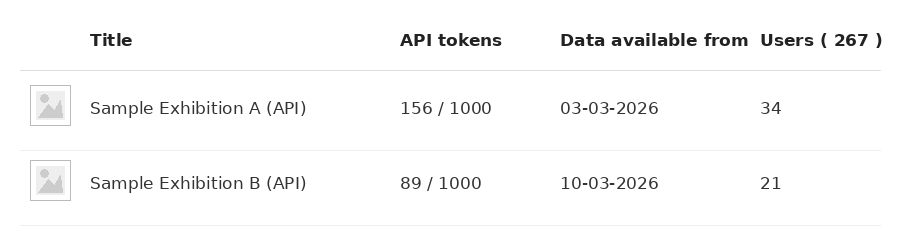

Nubart Team
Selling Nubart GUIDE access through your online shop — implementation guide
This page explains what your museum needs to know before asking your web developer or ticketing provider to connect your online shop to Nubart GUIDE. It covers how the integration works, what your developer will need, how to share your API credentials securely, and one implementation detail that helps visitors avoid problems later.
Before you start
Before asking your developer to implement the API, make sure you have:
- An administrator account in the Nubart customer portal
- Identified which module should be sold online
- Decided who will retrieve the API key (see below)
- The technical documentation link above, ready to share with your developer
What the API actually delivers
The API doesn't create a different version of Nubart GUIDE. It simply delivers the same secure access code digitally instead of printing it on a physical card. Instead of handing a visitor a card at the desk, your online shop requests a code from Nubart at the moment of purchase, and delivers it to the visitor as part of their ticket.
Everything that makes the card version work — non-transferability, no login, no app — carries over identically to the digital version.
Getting your API key
To implement this in your online shop, your webmaster will need your API key. For security reasons, that key is not accessible to us as Nubart employees. Only users with the "Admin" role can retrieve your API key. In practice, this means getting it into your webmaster's hands takes one extra step before implementation can start.

Option 1: give your webmaster temporary admin access
The simplest route is to invite your webmaster into your Nubart customer portal, where they can retrieve the key themselves. You can do so under the tab "employees". The trade-off is that this comes with full admin rights, not just the key — your webmaster would also be able to see things like your audio guide usage statistics. If that's not something you want to leave open-ended, you can go back to the tab "employees" and block him as soon as the implementation is done.
Option 2: an admin retrieves the key and passes it on securely
If you'd rather not extend portal access at all, one of your account's "Admin" users can log in, copy the key, and send it to the webmaster through a secure channel instead.
A few ways to pass it on, roughly from easiest to most cumbersome:
- Add it as a shared entry in your team's password manager and give the webmaster access to that entry.
- Split the key in two and send each half through a different channel — the first half by email, the second by messenger, for example.
- Read the key aloud on a call and have the webmaster type it directly into the shop's environment variables, so it's never written down in transit at all.
Whichever method you use, the goal is the same: avoid sending the full key as plain text in a single email or chat message. Splitting it across channels or across time is what actually keeps it safe.
The one implementation detail that matters: always show both the link and the QR code
When a visitor buys a ticket online, you can't know in advance which device they'll use to open the audio guide. Some will click the link on their laptop right after buying, at home. Others will wait and scan a QR code with their phone at the museum entrance.
We strongly recommend that every ticket display both the direct link and its corresponding QR code — never just one or the other. This gives visitors complete freedom to decide later whether they want to access the guide immediately on their phone or wait until they arrive at the museum. This is standard with our API; any web developer can implement it directly in your ticket template.
We also recommend adding a short line near the link/QR code:
"Tip: open this link on the phone you'll actually use during your visit."
This text needs to be added by your team into your own ticket template — Nubart doesn't insert it automatically.

What happens if a visitor opens the link on two different devices
If a visitor opens the link on a PC at home, then later opens the same link on their smartphone, the visitor is simply asked for an email address so a new access link can be sent to the correct device. The visitor still gets full access — nothing is lost — but it adds one extra step.
Once a visitor has provided an email address this way, it can't be changed to a different one. So the same mechanism that restores access to a new device also prevents the code from being freely shared with someone else.
Note: some email services automatically scan links for security. Our system recognizes this, so it won't accidentally block your visitors from opening their guide.
How token activation protects you from being charged for a technical failure
At Nubart, we create a series of access tokens for your module in advance, and that series is what you're invoiced for — the same principle as ordering a batch of printed cards. When your online shop connects through the API, it draws individual tokens from that same series instead of a printed one.
Retrieving a token from the API and activating it are two separate steps. Your online shop first asks for the next available token, then activates it once the visitor's purchase is confirmed. Only the activation step counts against your invoiced series and appears in your reporting.
This two-step design exists specifically to protect you from being charged for something that never reached a visitor. If a token is retrieved but the purchase then fails to complete for a technical reason — a timeout, a dropped connection, an error on the shop's side — that token is simply never activated. It isn't counted against your series, and you are never billed for it.
To keep this working reliably, we recommend your webmaster implement the timeout and retry behaviour described in Section 5 of the API documentation, so a failed response is retried automatically rather than silently treated as a failure.
How to check activated tokens and usage
Access via API doesn't change how you view your statistics. In your customer area, a new entry appears labelled with your audio guide's name plus "(API)" — for example, "[Audio Guide Name] (API)".
Under Stats in your customer area, you can see at any time how many of that entry's tokens have been activated, shown against the size of the series you purchased:

The Users column is a different number from activated tokens. It counts the visitors who actually used the link or QR code they received at purchase to open the audio guide — in other words, your real usage rate. This number is typically significantly lower than the number of activated tokens: plenty of audio guides are sold with the ticket, but not every visitor who buys one goes on to open it.
In the module statistics, both visitor groups are combined: those using a physical card and those accessing through the API are merged, giving you one complete picture of guide usage.
Why might my usage rate be lower than expected?
We consistently see lower usage rates for tokens delivered through the API than for our physical printed QR-cards handed out on site, where usage is typically very high, especially when sold as an extra item. A few factors are likely contributing at once, and we don't yet have enough data from a single integration to weigh them against each other:
- The purchase-to-visit gap. Online tickets are often bought days or weeks before the visit itself. Some tokens that look unused today belong to visits that simply haven't happened yet.
- The buyer isn't always the visitor. One person often books online for a group — family, colleagues, a school class. The audio guide link can end up in the inbox of whoever paid, not necessarily in the hands of everyone who visits.
- A different purchase context. Even when adding the audio guide online is a deliberate paid choice, not a bundled default, that choice is made away from the museum, sometimes days before the visit. Someone asking for a card at the front desk is already standing at the entrance, about to start their visit immediately — that immediacy may carry through to actually using it.
- No reminder on the day. A physical card is already in a visitor's hand at the entrance. A digital code bought earlier has nothing bringing it back to mind on the day itself, so it's easy to forget it was included or not have it at hand once you arrive.
- General no-show rate on the ticket itself. Some purchased tickets, audio guide or not, are never used at all — for reasons that have nothing to do with the audio guide.
Isolating how much each factor contributes would need visibility into the ticket shop's own purchase and visit-date records, not just our activation data. We're happy to work through this together with any customer who wants to dig into their own numbers.
Does this require changes to the audio guide?
No. The audio guide itself remains exactly the same. Only the way visitors receive their access code changes.
What happens when I run out of access codes?
Don't worry — you don't have to keep track of your remaining access codes yourself. Our system automatically alerts us as soon as only about 20% of your purchased codes are still available.
Your local Nubart representative will then get in touch to ask whether you would like to order additional codes. Once we receive your order, the new codes are activated within a few hours, and we'll send you a confirmation.
Questions about the integration?
Contact our CTO, Simon Effing: simon.effing@nubart.eu